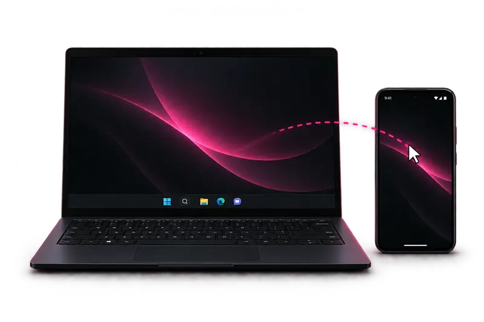
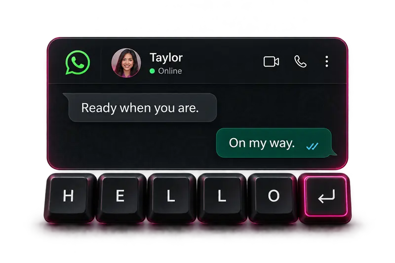
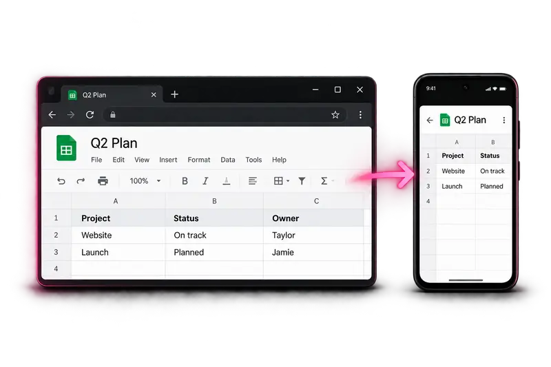
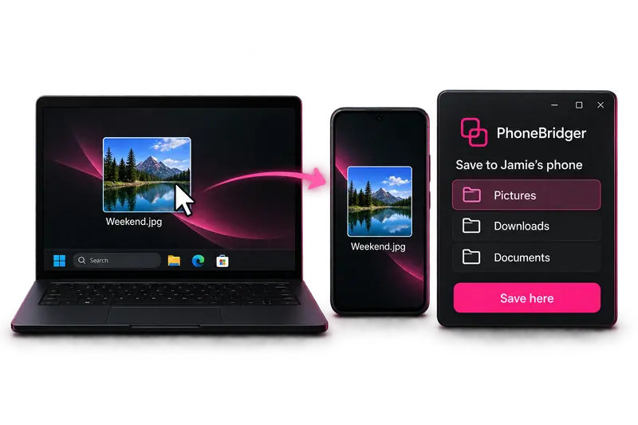
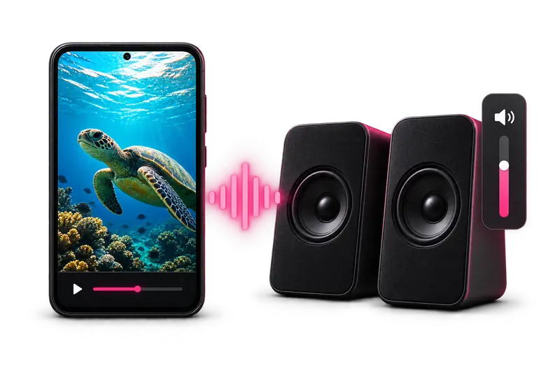
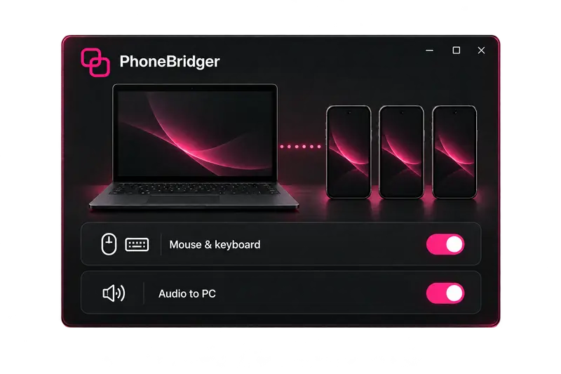

01
Move across screens
One mouse. A little more freedom.
YOUR WORKSPACE, LIVE
Six little ways to make your desk feel more connected.

One mouse. A little more freedom.

Your keyboard follows you.

Continue right where you left off.

From your desktop to your phone.

Your phone's sound. Your PC's speakers.

A workspace that feels like you.
Interactive demo · Sample data